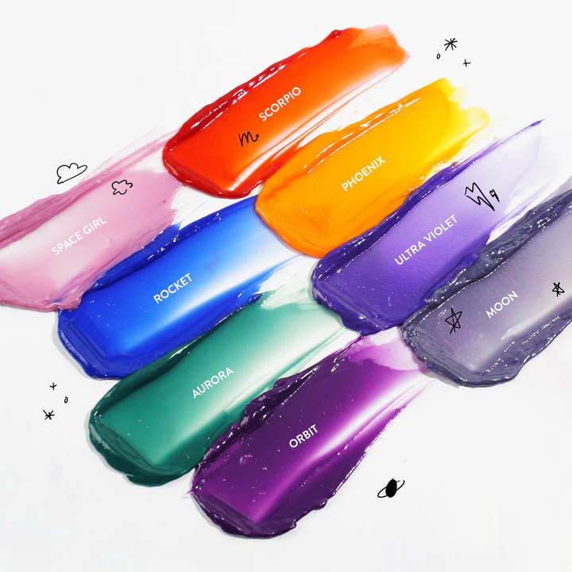

skydye
₱599.00
semi-permanent hair dye · shiny and vivid colour · 200mL
Sky Dye is a nourishing semi-permanent hair dye that leaves locks with
shiny and vivid colour without any damage! Its 100% vegan,
cruelty-free, and creamy formula is made of safe and moisturizing
ingredients that will keep hair looking and feeling lusciously soft!
This long-lasting dye lasts for approximately 4-6 weeks,
with little to no streaking or bleeding*. Achieve a lighter hair
colour level with the Bleach Cloud Hair Lightening Kit before applying
our Sky Dye Semi-Permanent Hair Dye for a brighter and more pigmented
effect!
*based on consumer survey from confirmed purchases
Available in 8 bold and fun shades for you to play
with! #DreamDye
- Aurorais an emerald green
- Moonis a silver cloud
- Orbitis a vibrant berry
- Phoenixis a fiery orange
- Rocketis a cobalt blue
- Scorpiois a twilight red
- Space Girlis a sunset pink
- Ultra Violetis a grape soda
Wear gloves and prepare the materials needed for your hair dyeing sesh! Remember: your hair needs to be bleached to a certain level for the colours to be visible! Saturate your hair with the Sky Dye, working your way from the tips to the roots. Afterwards, cover your hair with a plastic cap and leave it on for 45 minutes. Rinse your hair with lukewarm water, then let your hair dry. Enjoy your new look with your #DreamDye!